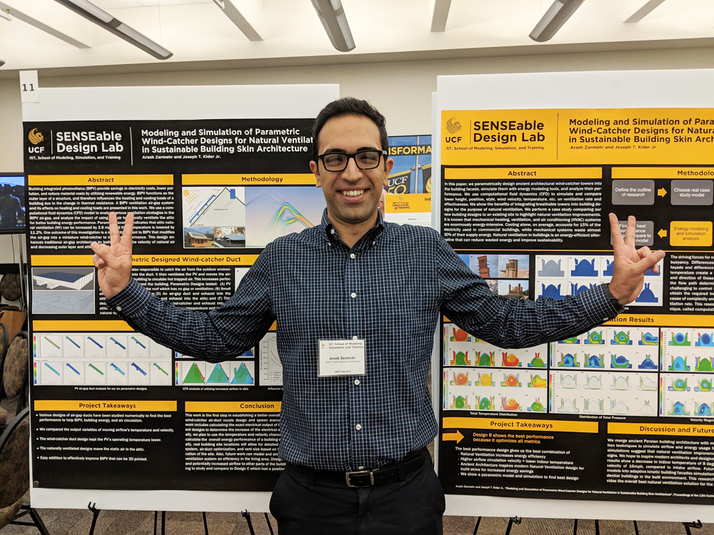

PhD Students
Our group is always looking for highly motivated and talented Ph.D. students so, if you are interested, I encourage you to apply to the PhD program at the School of Computing which is part of the Clemson University. I work in Visual Computing, a highly interdisciplinary program focusing on the acquisition, processing, and synthesis of visual information in the broad areas of computer graphics, visualization, perception, robotics, virtual/augmented reality, and cultural heritage. NOTE that the application will ask you to name the faculty members you may be interested in working with, so if I'm one of them do make sure to mention my name in your application.I am extremely passionate about research and I find great joy in my work, so group culture / teamwork means a lot to me. I am looking for students from diverse backgrounds, diverse displines - who are hard-working, inquisitive, passionate, collaborative, and kind.
Undergraduate students
I am excited to work with undergrads and often accept them to work in my lab. There are many great programs at Clemson - (Clemson University Creative Inquiry Program, etc.). Often these programs provide funding to students. I encourage all of my Ph.D .students and Postdocs to work with undergrads.Postdocs
Our group is always looking to exapand with one to two Postdoc positions. As a former postdoc, I understand the challenges and opportunities that come with this stage of one's career. I am eager to mentor individuals who are looking to have a meaningful research experience that will help shape and advance their professional journey. If you are interested in a possition please email me directly.
